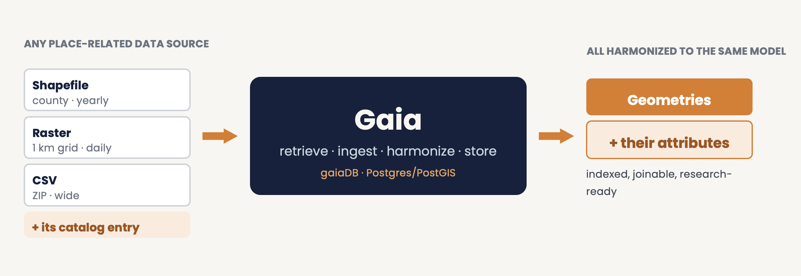
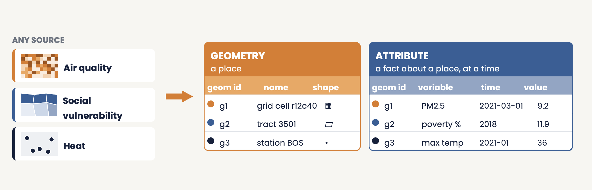
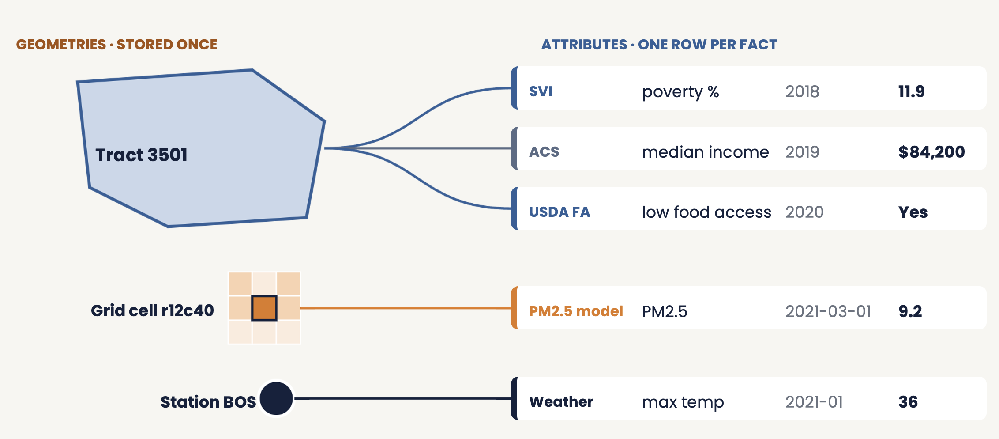
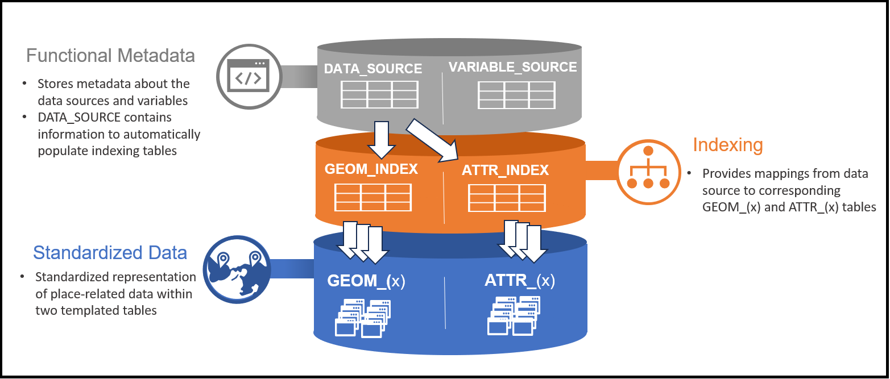

OHDSI GIS
OHDSI GIS  Gaia
Design Principles
Gaia
Design Principles
Design Rationale
Use Case Requirements
The Gaia toolchain was designed to meet specific research requirements for integrating geospatial data with patient health data:
Research Goals: - Link patient locations to environmental and social exposures over time - Harmonize disparate geospatial datasets from multiple sources - Calculate spatiotemporal exposure metrics while preserving patient privacy - Enable reproducible, federated network studies - Support diverse spatial data types (the geometry-attribute index is implemented for vector geometries today; rasters can be staged, and full raster support is planned)
Technical Requirements: - Standardized representation for heterogeneous geospatial data - Automated retrieval and ingestion of external datasets - Efficient storage and query performance for large spatial datasets - Extensible architecture supporting community growth - Integration with OMOP CDM and HADES analytics tools
Core Design Goals
The foundational goals driving Gaia’s architecture:
Extensibility
- Common data model enables stable tooling development
- Collaborative growth through a shared metadata repository (the catalog)
- Ontology integration via OMOP vocabulary standards
- Language-agnostic access through database connections and an optional PostgREST API
Automation
- Data retrieval from external sources, driven by each catalog entry’s metadata and ETL scripts
- Standardization of every source into the same geometry and attribute structure
- Ingestion into the harmonized schema with one call per dataset
- Deployment via a containerized stack (gaiaDocker), or on any PostgreSQL/PostGIS server
Efficiency
- Storage design: one geometry table and one attribute table per source, in a tall (one row per fact) layout
- Spatial indexing for query performance
- Centralized metadata reduces duplication of ETL effort
- Modular architecture allows independent component development
Architecture Strategy
Design Approach
| Challenge | Approach |
|---|---|
| Enable extensible tooling | Implement a common data model for place-related data |
| Universal representation for any geospatial data | Represent data as geometries and attributes (of geometries) |
| Efficiency with large standardized datasets | Split each data source into its own pair of geometry and attribute tables |
| Static functionality for any new data | A geometry-attribute index (geom_index,
attr_index) lets one join serve every source |
| Maintain source provenance and versioning | Data source and variable metadata with unique identifiers referenced throughout the schema |
| Automate retrieval, ingestion, standardization | Each catalog entry carries its metadata (JSON-LD) and ETL scripts; gaiaDB runs them |
| Enable collaborative metadata growth | Host metadata centrally (gaiaCatalog), not the data sources themselves |

Whatever format a source arrives in, Gaia retrieves it using its catalog entry, ingests it, harmonizes it and stores it as geometries and their attributes.
Geometries and Attributes
Every source, whatever its native format, resolution or time coverage, is stored as one of two kinds of object: a place (a geometry) or a fact about a place at a time (an attribute).

Geometries are stored once, and any number of sources can attach facts to the same place:

Two sources at the same level (for example SVI and ACS for one tract) do not add a new place, only new facts about the place that is already there.
Data Pipeline
Gaia processes geospatial data through a standardized pipeline:
External data source
↓
gaiaCatalog entry (JSON-LD metadata + ETL scripts)
↓ backbone.ingest_datasource()
gaiaDB: metadata load → download and load into PostGIS → geometry clean-up
↓ backbone.gdsc_load_all_variables()
working.geom_<source> and working.attr_<source>, registered in geom_index / attr_index
↓ working.spatial_join_from_catalog()
working.external_exposure
↓ gaiaCore (direct database connection)
OMOP CDM (EXTERNAL_EXPOSURE) + HADES analyticsPipeline stages:
- Discovery: gaiaCatalog holds metadata and ETL scripts for external datasets
- Metadata load: the entry’s JSON-LD populates
data_sourceandvariable_sourceand registers the dataset in the indexes - Retrieval and ingestion: the entry’s ETL scripts
download the source and load it into PostGIS (
ogr2ogr), then clean the geometry and add a local-projection column - Load variables:
gdsc_load_all_variablesbuilds the dataset’sgeom_*andattr_*tables, one row per feature, variable and time window - Join:
spatial_join_from_catalogmatches person locations to geometries and clips each value to the residence interval, one variable at a time - Access: gaiaCore runs the pipeline from R, checks the derived rows and copies the exposure into the OMOP CDM
See the gaiaDB README for the function reference.
Backbone Schema
Schema Overview
The gaiaDB backbone schema holds the metadata and the
index; the per-source data tables live in the working
schema.

Metadata tables describe what data exists. Index tables map each source to its tables. Standardized tables hold the harmonized data.
1. Metadata Tables
DATA_SOURCE and VARIABLE_SOURCE are loaded from a catalog entry’s JSON-LD file:
- DATA_SOURCE: one row per dataset. Columns include
dataset_id,dataset_name,dataset_version,description,creator,provider,license,spatial_coverage,geom_type,srid, and the dataset’s ETL metadata (etl_metadata). - VARIABLE_SOURCE: one row per variable of a dataset.
Columns include
variable_name,variable_description,property_id(the variable’s concept),data_type,unit_code,unit_text,min_value,max_value,start_dateandend_date. Thevariable_source_idis what Gaia writes intoexposure_source_value.
2. Index Tables
GEOM_INDEX and ATTR_INDEX map each source to the tables that hold it:
- GEOM_INDEX: where each geometry table lives
(
database_schema,table_name) and its geometry type - ATTR_INDEX: where each attribute table lives, plus
the variable’s name, concept, unit (
unit_source_value) and time window (attr_start_date,attr_end_date)
The joins run against the tables these indexes describe, rather than against source-specific code, so a new source is added by cataloging it, not by writing a new join.
Known limitation: the link from a geometry table back to its data source is still partly by table name; stable, load-order-independent identifiers are under discussion in the working group.
Standardized Data Storage
Common Data Model Rationale
The common data model approach, proven for clinical data (OMOP CDM), provides:
- Interoperability: harmonized structure enables federated research
- Extensibility: a static model supports stable tooling development
- Scalability: new data sources fit the existing structure
Gaia’s approach: represent geospatial data as geometry objects with affiliated temporal attributes.
Key transformation: wide tables (one column per variable) become tall tables (one row per fact):
Wide format:
| geom_id | county_name | pop_2020 | income_median | svi_score |
Tall format:
| geom_id | variable | value | start_date | end_date |
| 001 | pop_2020 | 50000 | 2020-01-01 | 2020-12-31 |
| 001 | income_median | 65000 | 2020-01-01 | 2020-12-31 |
| 001 | svi_score | 0.45 | 2020-01-01 | 2020-12-31 |Time series stored as JSON in a source column (for example the CDC monthly PM2.5 series) become one row per time window.
Benefits: - A single standard representation for all attributes - A static column structure across all data sources - Efficient querying via the indexes - New variables are added without changing the schema
GEOM and ATTR tables
Two template tables, backbone.geom_template and
backbone.attr_template, are replicated for every data
source as working.geom_<table_id> and
working.attr_<table_id>.
Geometry table
| Column | Meaning |
|---|---|
geom_record_id |
Identifier of the geometry (the raw table’s primary key) |
geom_name |
Human-readable name (for example a county name) |
geom_source_coding,
geom_source_value |
How the source identifies the geometry (for example FIPS) |
geom_wgs84 |
The geometry in WGS 84 (EPSG:4326) |
geom_local_epsg,
geom_local_value |
The geometry in a local projection, used for measurement |
properties |
Remaining source columns |
Hierarchies between geometries (for example tract within county) and validity periods for boundaries that change over time are not implemented yet; they are on the working group’s list.
Attribute table
| Column | Meaning |
|---|---|
attr_record_id |
Identifier of the attribute row |
geom_record_id |
The geometry the fact is about |
variable_source_id |
The variable (links to
variable_source) |
attr_concept_id |
The variable’s concept |
attr_start_date,
attr_end_date |
The time window the value applies to |
value_as_number,
value_as_string, value_as_concept_id |
The value |
unit_concept_id,
unit_source_value |
The unit, as declared in the catalog |
attr_source_value,
value_source_value |
What the source file called the variable and the value |
Catalog Entries and Functional Metadata
A catalog entry holds everything needed to retrieve and load one dataset. Besides the descriptive metadata that makes a dataset findable, it carries functional metadata: machine-actionable instructions that gaiaDB acts on.
What a catalog entry contains
datastore/data/<table_id>/
meta_json-ld_<table_id>.json JSON-LD metadata (dataset and variables)
meta_etl_<table_id>.json ETL configuration (geometry, EPSG, fields)
meta_dcat_<table_id>.json DCAT catalog metadata
etl/
<table_id>_osgeo.sh download the source and load it with ogr2ogr
<table_id>_postgis.sh clean the geometry, add a local projection, indexThe JSON-LD file drives the metadata load:
| JSON-LD field | gaiaDB column |
|---|---|
@id |
data_source.dataset_id |
name |
data_source.dataset_name |
measurementTechnique (vector
geometry) |
data_source.geom_type |
additionalProperty (spatial reference
system) |
data_source.srid |
about |
data_source.etl_metadata |
variableMeasured[].propertyID |
variable_source.property_id and
attr_concept_id |
variableMeasured[].startDate,
endDate |
variable_source.start_date,
end_date and the time window in
attr_index |
The two shell scripts are the retrieval and transformation logic for that source. They are generated from the entry’s metadata, not written by hand for each dataset.
Why a central catalog
Without functional metadata: manual download of each dataset, custom transformation code for each source, undocumented ETL, duplicated effort across sites.
With functional metadata: retrieval from the source URL, a standard transformation, a documented and reproducible pipeline, and ETL logic shared across the community.
Functional metadata is hosted centrally in gaiaCatalog, not the datasets themselves, so storage is light, there is a single source of truth for each source, and any Gaia instance can ingest a dataset from its entry.
How an entry is created
- Identify a publicly hosted geospatial dataset and judge its fitness for the question (Exercise 1)
- Describe it in the Kobo authoring form; the crosswalk turns the form into the JSON-LD record and the ETL scripts
- Test it in a local stack with
backbone.ingest_datasource('<table_id>') - Submit the entry to gaiaCatalog by pull request
- Review by the working group, then merge
See gaiaCatalog and Get Started for more.
Status of declarative recipes
The original design called for recipes: declarative
metadata (geom_spec for geometries, attr_spec
for attributes) that gaiaDB would read and execute directly. That is
not implemented. Today, retrieval and loading run as
source-specific ETL scripts, as above. How recipes should be expressed,
and where they should be interpreted, is an open question the working
group is evaluating before committing to an approach.
Design Benefits
Reproducibility
- Version-controlled catalog entries: metadata and ETL scripts tracked in git
- Documented provenance: source URLs, versions, and the variable behind every exposure row
- Containerized deployment: identical environments via gaiaDocker (a convenience, not a requirement)
- Standardized vocabularies: OMOP concepts for semantic interoperability
Scalability
- Efficient storage: tall structure with indexing
- Independent sources: each source has its own tables
- Portable: gaiaDB is a standard PostgreSQL/PostGIS database that runs on any native Postgres server
- Scaling: spatial processing stays in gaiaDB; R sessions connect to it as needed
Community Growth
- Shared metadata: reduces duplication of effort
- Collaborative validation: the community reviews catalog entries
- Extensible architecture: new data sources fit the existing structure
- Open source: all tools and metadata are freely available
Learn More
- Gaia Overview: Introduction to the Gaia toolchain
- Architecture: Technical architecture and data flows
- Vocabulary: OMOP GIS vocabulary package
- Get Started: Deploy Gaia and join the working group